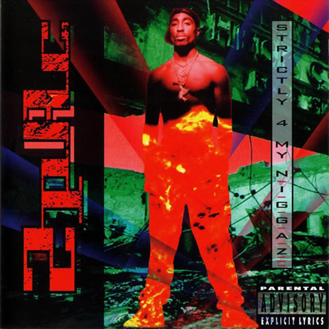

Beginnings: 1989–1991
Tupac, using the stage name MC New York, began recording in 1989. That year, he began attending the poetry
classes of Leila Steinberg. Soon, she became the budding music artist's manager.
Steinberg organized with Tupac's rap group Strictly Dope a concert. She managed to get Tupac signed by
Atron Gregory, manager of the rap group Digital Underground. In 1990, Gregory placed Tupac with the
Underground as a roadie and backup dancer.
Under the stage name 2Pac, he debuted on the group's January 1991 single "Same Song," leading the group's
January 1991 EP titled This Is an EP Release, while 2Pac appeared in the music video.
It also went on the soundtrack of the February 1991 movie Nothing but Trouble, starting Dan Akroyd, John
Candy, Chevy Chase, and Demi Moore.

Rising star: 1992–1993
2Pac's debut album, 2Pacalypse Now—alluding to the 1979 film Apocalypse Now—arriving in November 1991,
would bear three singles.
Some prominent rappers—like Nas, Eminem, Game, and Talib Kweli—cite it as an inspiration. Aside from "If
My Homie Calls," the singles "Trapped" and "Brenda's Got a Baby" poetically depict individual struggles
under socioeconomic disadvantage.
2Pac's second album, Strictly 4 My N.I.G.G.A.Z..., arrived in February 1993.

A critical and commercial advance, it debuted at #24 on the pop albums chart, the Billboard 200.
More hardcore overall, it emphasizes Tupac's sociopolitical views, and has a metallic production quality.
In fact, in its vinyl release, side A, tracks 1 to 8, is labeled the "Black Side," while side B, tracks 9
to 16, is the "Dark Side." Nonetheless, the album carries the single "I Get Around," a party anthem
featuring the Underground's Shock G and Money-B, which would render 2Pac's popular breakthrough, reaching
#11 on the pop singles chart, the Billboard Hot 100.
And it carries the optimistic compassion of another hit, "Keep Ya Head Up," encouraging women. This album
would be certified Platinum, a million copies sold. As of 2004, among 2Pac albums, including of posthumous
and compilation albums, the Strictly album would 10th in sales, about 1 366 000 copies.